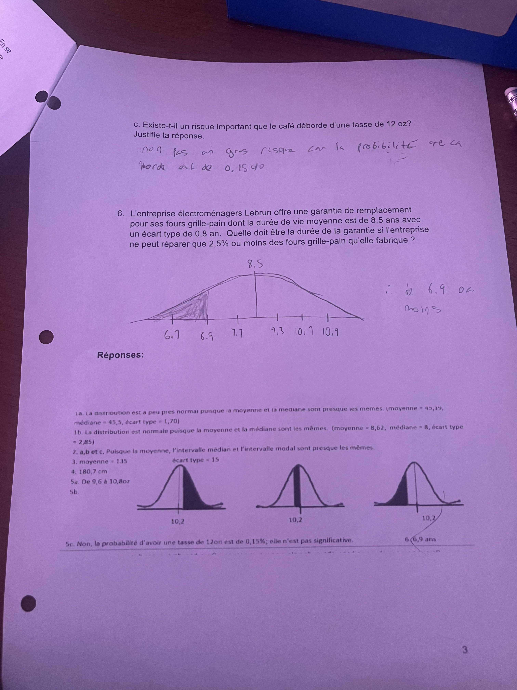

Devoir 2.4 – partie papier-crayon



Devoir 2.4B – partie technologie
Mon travail est dans un document Google.
Ouvrir le devoir 2.4BMDM4U – Travail 2.4

Mon travail est dans un document Google.
Ouvrir le devoir 2.4B